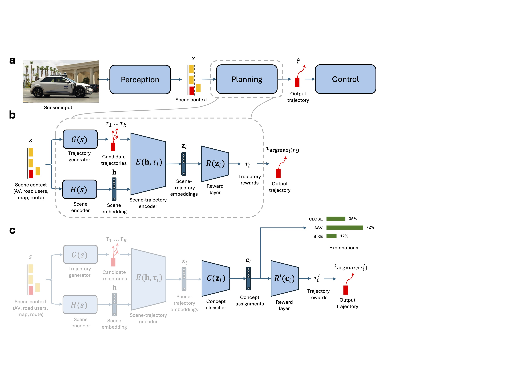
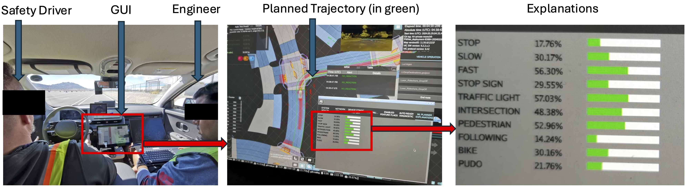
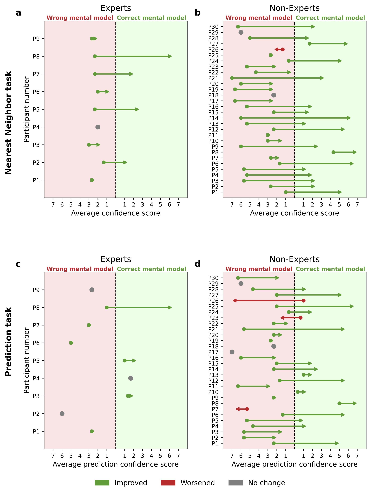
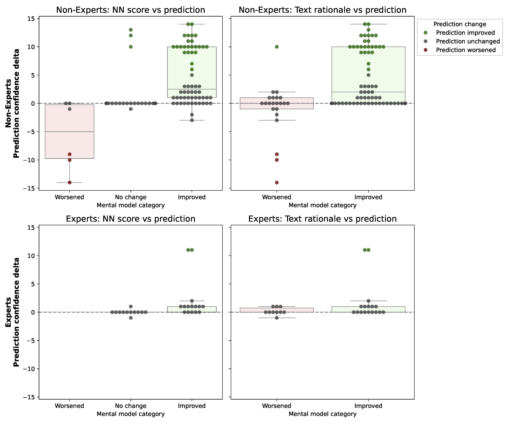

Explainable deep learning improves human mental models of self-driving cars
Interpretable-by-Design Architecture
Self-driving cars increasingly rely on deep neural networks to achieve human-like driving. However, the opacity of these black-box planners makes it challenging to anticipate their failures. To address this, we introduce the Concept-Wrapper Network (CW-Net).
CW-Net acts as a method for faithfully explaining the behavior of machine-learning-based planners by causally grounding their reasoning in human-interpretable concepts. We replace the final reward layer of a pretrained deep neural network with a concept classifier, generating decisions directly from interpretable scenarios like "Approaching stopped vehicle" or "Close to cyclist."

Maintaining Expert Performance
A frequent critique of inherently interpretable models is the perceived trade-off between transparency and task performance. We evaluated CW-Net on the large-scale nuPlan benchmark using closed-loop simulations to verify driving capability.
The results demonstrate that CW-Net classifies concepts and provides causally faithful explanations without compromising the driving behavior of the original system. Our model exhibited less than a 1% difference across all safety, progress, and trajectory deviation metrics compared to the opaque baseline agent.
Surprising Situations in Real-World Deployment
To study the practical utility of CW-Net, we deployed the system on a real self-driving car with a safety driver in a semi-naturalistic study. The following setup and videos capture naturally occurring, surprising events where the explanations actively refined the driver's mental model of the vehicle's decision-making process.

Mental Model & Prediction Correlation
To validate that the improvements observed in real-world deployment replicate in larger populations, we conducted online studies with both expert test engineers and non-experts. We utilized nearest-neighbor and counterfactual prediction tasks to directly probe user mental models.
Our findings indicate that CW-Net explanations consistently shift user beliefs toward the ground-truth reasons for autonomous behavior. Crucially, as the "goodness" of a user's mental model improved, their ability to accurately predict the vehicle's future actions increased significantly.


SAGAT: Pragmatic Usage and Situational Awareness
As a final, rigorous evaluation, we collected naturalistic scenarios from public roads in Las Vegas and deployed a large-scale online study using the Situation Awareness Global Assessment Technique (SAGAT).
The results provide definitive evidence of pragmatic utility: in surprising, out-of-distribution events, CW-Net explanations yielded large effect-size improvements in perception, comprehension, and projection. Conversely, the explanations did not degrade situational awareness during routine, unsurprising events. These findings establish a deployment-validated pathway for making autonomous agents demonstrably transparent and safe for human operators.
Citation
If you find this work useful in your research, please consider citing: